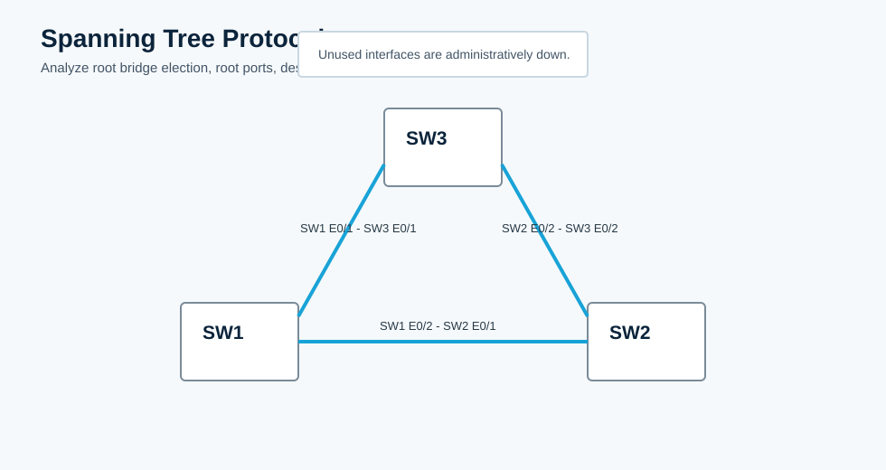

Overview
This lab focuses on classic spanning-tree analysis: root bridge election, root ports, designated ports, and blocking or alternate ports. The CML topology starts with three switches connected in a redundant triangle and unused interfaces shut down.
All commands in this guide use the CML interface names shown in the topology.
Topology
The three switches form a triangle. STP must block one redundant path for VLAN 1.

Task 1: Verify the Baseline
Check switch identity, active links, and the spanning-tree state for VLAN 1.
! SW1, SW2, SW3
show cdp neighbors
show interfaces status
show spanning-tree vlan 1
show spanning-tree summaryTask 2: Identify the Root Bridge
The root bridge is the switch with the lowest bridge ID. Bridge ID is the bridge priority plus VLAN ID, followed by the switch MAC address.
show spanning-tree vlan 1 | include Root ID|Bridge ID|This bridgeRecord which switch is root and explain whether it won because of priority or MAC address.
Task 3: Identify Root and Designated Ports
On non-root switches, identify the root port. On every segment, identify the designated port.
show spanning-tree vlan 1
show spanning-tree vlan 1 detailDocument each active interface as Root, Designated, or Alternate.
Task 4: Identify Blocking or Alternate Ports
Find the port that is administratively enabled but not forwarding because STP selected a better path.
show spanning-tree vlan 1 | include Altn|BLK|Root|Desg
show spanning-tree blockedportsTask 5: Change the Root Bridge and Re-Analyze
Make SW1 the root bridge for VLAN 1, then verify how the root ports, designated ports, and alternate ports change.
! SW1
conf t
spanning-tree vlan 1 priority 4096
end
! SW1, SW2, SW3
show spanning-tree vlan 1
show spanning-tree blockedportsExpected result: SW1 becomes the root bridge, all SW1 active STP ports are designated, and non-root switches choose their lowest-cost path back to SW1.